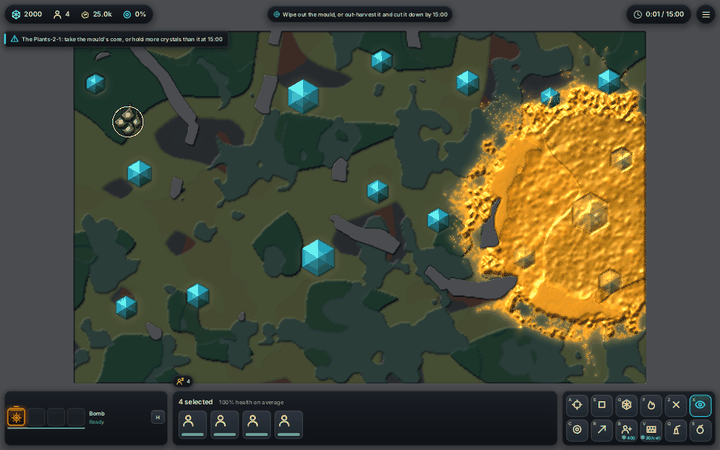
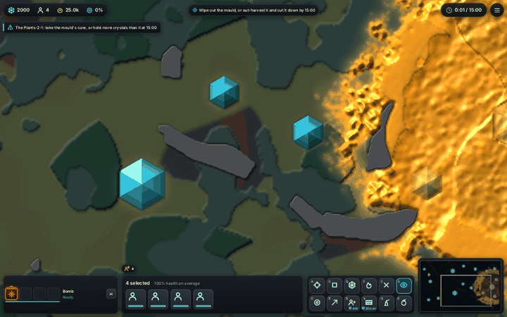

<title>Plants and Fire</title>
<meta name="claude:viewport-fit-sides" content="cover">
<link rel="stylesheet" href="https://fonts.googleapis.com/css2?family=Inter:wght@400;600&family=Space+Grotesk:wght@500;700&display=swap">
<style>
/* Layout: one reading column, films full width with their numbers under each. */
:root {
  --bg: #f3f4f1; --fg: #1d221d; --muted: #5b645a; --line: #d5dad2; --accent: #c26a1a; --leaf: #3d5a46;
  --display: "Space Grotesk", "Segoe UI", system-ui, sans-serif;
  --body: "Inter", "Segoe UI", system-ui, sans-serif;
}
@media (prefers-color-scheme: dark) { :root:not([data-theme="light"]) { --bg: #121512; --fg: #e4e8e2; --muted: #9aa597; --line: #2b322b; --accent: #f0a050; --leaf: #8fb39a; color-scheme: dark } }
:root[data-theme="dark"] { --bg: #121512; --fg: #e4e8e2; --muted: #9aa597; --line: #2b322b; --accent: #f0a050; --leaf: #8fb39a; color-scheme: dark }
body { background: var(--bg); color: var(--fg); font-family: var(--body); line-height: 1.55; }
main { max-width: 760px; margin: 0 auto; padding-block: 32px 48px; padding-left: max(16px, env(safe-area-inset-left, 0px)); padding-right: max(16px, env(safe-area-inset-right, 0px)); display: grid; gap: 28px; }
h1, h2 { font-family: var(--display); text-wrap: balance; margin: 0; }
h1 { font-size: 2rem; }
h2 { font-size: 1.25rem; }
p { margin: 0; max-width: 65ch; }
.eyebrow { text-transform: uppercase; letter-spacing: .08em; font-size: .75rem; color: var(--leaf); font-weight: 600; }
section { display: grid; gap: 10px; }
figure { margin: 0; display: grid; gap: 8px; }
figure img { width: 100%; height: auto; border-radius: 6px; border: 1px solid var(--line); }
figcaption { color: var(--muted); font-size: .9rem; }
.counts { display: grid; grid-template-columns: repeat(auto-fit, minmax(140px, 1fr)); gap: 8px 16px; font-variant-numeric: tabular-nums; }
.counts div { display: grid; gap: 2px; border-top: 1px solid var(--line); padding-top: 6px; }
.counts b { font-family: var(--display); font-size: 1.15rem; color: var(--accent); }
.counts span { font-size: .8rem; color: var(--muted); }
ul { margin: 0; padding-left: 20px; display: grid; gap: 4px; }
</style>
<main>
  <header style="display:grid;gap:8px">
    <div class="eyebrow">Larder World · plants thread · 2026-11-14</div>
    <h1>Plants and Fire</h1>
    <p>A new plant field in four kinds: meadow, jungle, reeds and scrub. Plants grow toward what the soil allows and spread from their edges. Fire runs through them and eats them, and it stops at water, reeds and living slime. Burnt ground stays charred until the plants grow back over it. Everything you see is drawn from these fields, in the game itself on software Vulkan.</p>
  </header>

  <section>
    <h2>Two bombs light a meadow</h2>
    <figure>
      
      <figcaption>Planet 2, seed 1, with stand-in plants, one frame per game second from 1 to 45 s. Two bomb rounds go off at 3 s and the squad stands idle.</figcaption>
    </figure>
    <div class="counts">
      <div><b>25,000 → 24,933</b><span>slime at 3 s and 20 s</span></div>
      <div><b>25,411</b><span>slime at 45 s, still growing</span></div>
      <div><b>0</b><span>fire crosses the slime body or water</span></div>
    </div>
  </section>

  <section>
    <h2>Close up</h2>
    <figure>
      
      <figcaption>The same run from 1 to 30 s, zoomed in near the two blasts. The flame is the fire's heat, ember to orange to yellow. The black is the char, which fades as plants regrow.</figcaption>
    </figure>
  </section>

  <section>
    <h2>How hard fire hits the slime</h2>
    <p>You asked that fire must not make the slime easy to wipe out. A cell where the slime is thick counts as wet, so it never catches, and a fire that reaches it goes out. Fire kills only the walkers on the slime's thin edge and its stragglers.</p>
    <div class="counts">
      <div><b>501</b><span>walkers killed in 80 s, in a CPU probe that lit 8 fires around the slime</span></div>
      <div><b>5,405 → 7,669</b><span>the slime grew over the same 80 s</span></div>
      <div><b>3.0</b><span>trail where slime stops fire (<code>fire_damp</code>; lower lets more burn)</span></div>
    </div>
  </section>

  <section>
    <h2>Cost and checks</h2>
    <ul>
      <li>On llvmpipe at 960 × 600 with 25,000 walkers, the frame went from 54.0 to 57.2 ms at the median. The plant passes take 1.4 ms of each game step. The GTX 1070 has not been timed yet.</li>
      <li>The GPU matched the CPU exactly in a 6 s twin test with a burn lit at 3 s: plants, kinds, fire and char were all identical, and both killed 114 walkers.</li>
      <li>Who lights fire: scorch rounds light their line, and blasts light a ring just outside their crater. Fire does not hurt soldiers yet.</li>
    </ul>
  </section>
</main>
